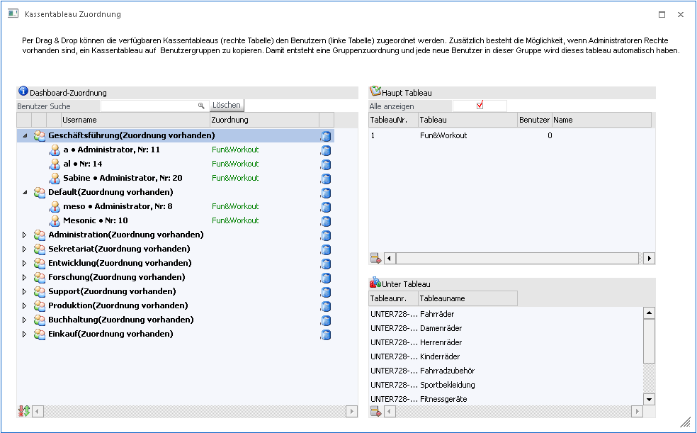
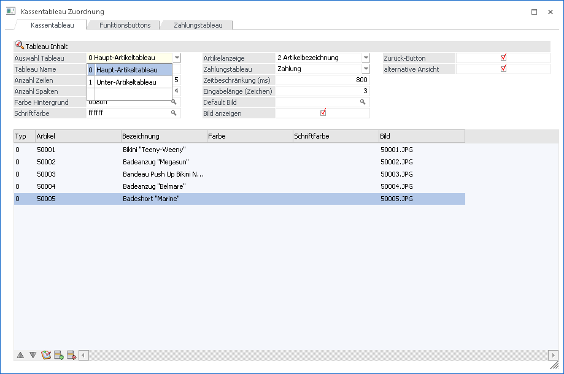
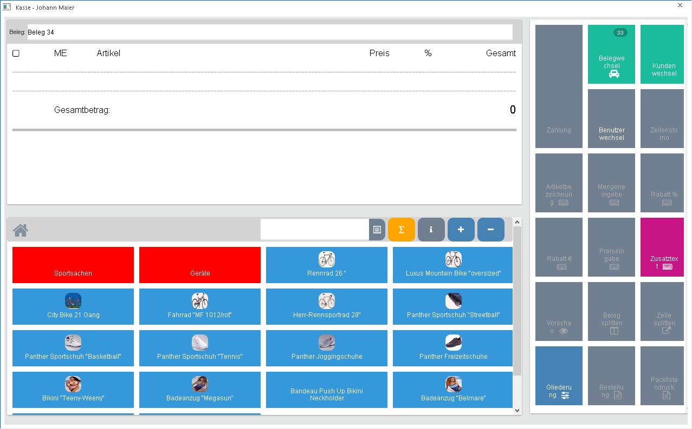
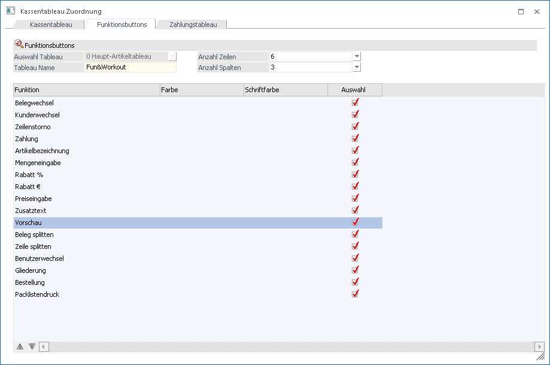
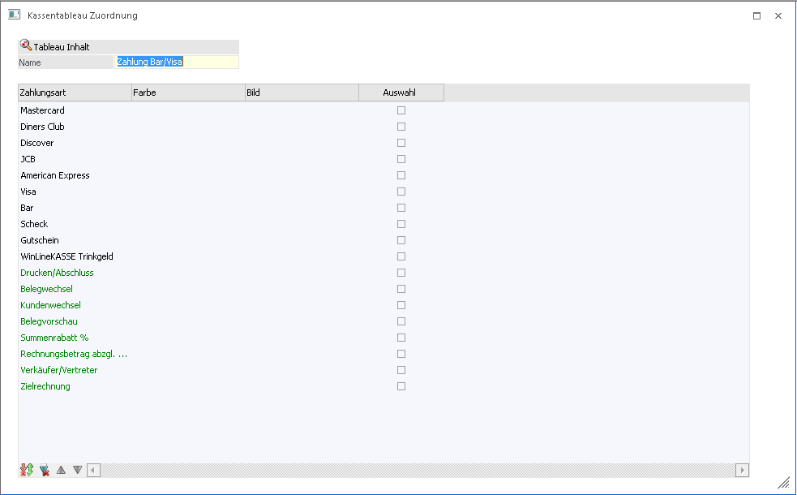
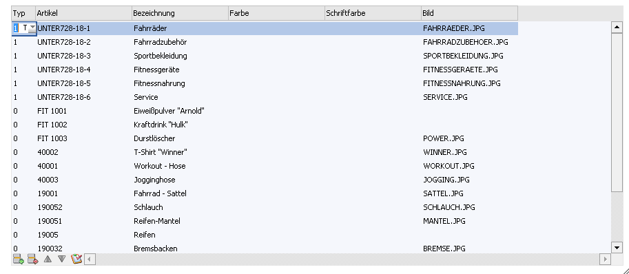
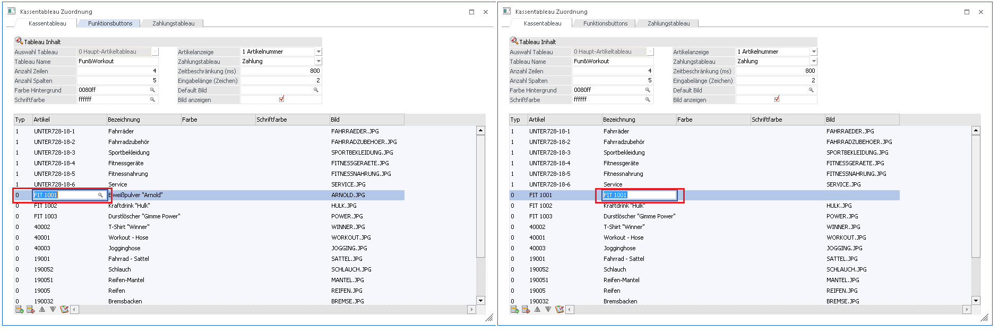

Um im Menüpunkt "Kasse" ein eigenes Dashboard verwenden zu können, muss dies vorher selbst angelegt werden. Falls kein eigenes Dashboard für die Kasse beim jeweiligen Benutzer verwendet wird, wird ein Demo-Dashboard für diesen Benutzer angezeigt. Neue Kassen-Dashboards werden im Menüpunkt
1 Erfassen
1 Kassentableau - Zuordnung
in der WinLine FAKT angelegt.

Das Fenster "Kassentableau Zuordnung" gliedert sich in drei verschiedene Bereiche:
Im linken Bereich können bereits angelegte Dashboards für die Kasse per Drag & Drop einen beliebigen Benutzer zugewiesen oder gelöscht werden. Falls dieses Fenster von einem Administrator geöffnet wird, ist jeder Benutzer und jedes erstellte Dashboard sichtbar. Hingegen bei einem Benutzer ohne Administrationsrechte nur der gerade angemeldete Benutzer und seine erstellten Dashboards angezeigt.
Auf der rechten Seite des Fensters befinden sich zwei Bereiche für das Haupt- und Untertableau des Kassendashboards. Mit dem Ribbon-Button "Neu" oder per Doppelklick auf ein bestehendes Tableau kann dies entweder bearbeitet oder neu angelegt werden.
Ribbonbuttons:
Ø Neu
Mit dem Ribbon Button "Neu" wird ein neues Fenster geöffnet, wo entschieden werden kann ob ein "Haupttableau" oder ein "Untertableau" angelegt werden soll.
Ø Kassentableau exportieren
Mit den Ribbon-Button "Kassentableau exportieren" wird das Tableau als XML-Datei exportiert, welches gerade den Fokus gesetzt hat. Es können sowohl Haupttableau als auch Untertableaus exportiert werden.
Ø Kassentableau importieren
Mit dem Button "Kassentableau importieren" können diese Tableaus dann wieder importiert werden. Wenn ein Tableau erfolgreich importiert wurde, erscheint die Meldung "Die Datei wurde erfolgreich importiert!". Danach können noch Änderungen manuell getätigt werden und erst wenn der Button Speichern gedrückt wird, wird das Tableau gespeichert.
Ø Kassentableau kopieren
Wenn ein Tableau per Drag&Drop auf ein anderes Tableau gezogen wird, erscheint eine Meldung, ob die Definition des Tableaus mit der anderen Definition ersetzt werden soll und wird somit kopiert.

Folgende Einstellungen können im Haupttableau getroffen werden:
Zu Beginn kann gewählt werden, ob es sich um ein Haupt- oder ein Untertableau handeln soll. Im Unterartikel-Tableau kann nur ein Name und Artikel bzw. weitere Untertableaus zugewiesen werden.
Kassentableau
Ø Tableau Name
Hier kann ein Name für das aktuelle Tableau vergeben werden.
Ø Anzahl Zeilen
Mit dieser Zahl wird festgelegt, wie viele Zeilen (vertikal), das Dashboard haben soll.
Ø Anzahl Spalten
Mit dieser Option wird festgelegt, wie viele Spalten (horizontal), das Dashboard haben soll.
Ø Farbe Hintergrund
Die Standard-Farbe der Artikel bzw. Untertableau Kacheln im Dashboard können gewählt werden.
Ø Schriftfarbe
Hier kann die Farbe der Schrift der Kacheln im Dashboard eingestellt werden.
Ø Artikelanzeige
Mit dieser Option kann eingestellt werden, wie die Bezeichnung der Artikel des Tableaus im Dashboard angezeigt werden sollen. Es kann Artikelnummer bzw. Artikelbezeichnung oder die Artikelnummer und Artikelbezeichnung angezeigt werden.
Hinweis:
Wenn der Button "Bezeichnung für alle übernehmen" gedrückt wird, werden auch die zuvor manuell abgeänderten Bezeichnungen mit der Artikelanzeige-Einstellung überschrieben.
Ø Zahlungstableau
Hier kann per "NEUEINGABE" ein neues Zahlungstableau angelegt oder schon vorhandene Zahlungstableaus für das jeweilige Haupttableau zugeordnet werden.
Ø Zeiteinschränkung (ms)
Mit dieser Einstellung kann die Zeitverzögerung, wann die Suche im Kassendashboard angestoßen werden soll, eingestellt.
Ø Eingabelänge (Zeichen)
Mithilfe dieser Option kann entschieden werden, ab wie viele Zeichen die Suche im Kassendashboard angestoßen werden soll.
Ø Default Bild
Hiermit kann ein Bild für die Kacheln hinterlegt werden, welches greift, wenn kein anderes Bild hinterlegt wurde
Ø Bild anzeigen
Mit dieser Option wird entschieden, ob in den Kacheln des Dashboards ein Bild angezeigt wird
Ø Zurück-Button
Wenn diese Option aktiviert wird, wird bei Arbeiten im Kassendashboard, in jeder Unterebene (Untertableau) ein Zurück-Button als Kachel an erster Stelle eingefügt Beim Drücken dieses Buttons kommt man wiederum eine Ebene zurück, bis man zuletzt wieder im Hauptdashboard angelangt ist.
Ø Alternative Ansicht
Wenn diese Option aktiviert ist, werden die 3 Hauptbereiche des Kassendashboards an verschiedenen Positionen angezeigt und sind unterscheiden sich von Ihrer Größe.

Funktionsbuttons

Ø Zeilenanzahl
Hier kann festgelegt werden, wie viele Zeilen für die Funktionsbuttons des Kassendashboards angezeigt werden soll
Ø Spaltenanzahl
Hier kann festgelegt werden, wie viele Spalten für die Funktionsbuttons des Dashboards angezeigt werden soll
Im Reiter Funktionsbuttons kann entschieden werden, welche Funktionen im Kassendashboard bei diesem Tableau zur Verfügung stehen. Diese Funktionsbuttons können mittels Button "eine Zeile nach oben" bzw. "eine Zeile nach unten" beliebig verschoben werden. Die Anzeige dieser Buttons erfolgt nach der Reihenfolge der Spalten, mit der Ausnahme des Zahlungsbuttons, dieser befindet sich immer an erster Stelle.
Hinweis:
Es muss darauf geachtet werden, dass die Anzahl der Zeilen und Anzahl der Spalten groß genug ist, dass auch alle aktivierten Buttons angezeigt werden sollen. Wenn alle 11 Funktionsbuttons aktiviert sind muss mindestens eine Anzahl der Zeilen 6 und Anzahl der Spalten 2 bzw. Anzahl der Zeilen 4 und Anzahl der Spalten 3 eingestellt werden.
Ø Belegwechsel
Mittels Klick auf den Button wird der Beleg abgelegt, die Kachelansicht verändert und es kann ein neuer Beleg erfasst werden. Durch nochmaliges Drücken des Belegwechsels kann danach aus den zuvor abgelegten Belegen gewählt werden. (Gesamtsumme der Belege ist hier sichtbar).
Ø Kundenwechsel
Mit dieser Funktion kann der Beleg einem Kunden zugewiesen werden. Mittels Klickwird ein Kunden-Matchcode geöffnet. Wenn ein Kunde ausgewählt wurde wird für die schon erfassten Artikel erneut eine Preisfindung angestoßen.
Ø Zeilenstorno
Mit diesem Button wird jene Artikelzeine gelöscht, welche gerade den Fokus am Kassenbon hat. Zusätzlich können auch zuvor erfasste Zusatztexte mit dieser Option gelöscht werden. Wurde der Beleg bereits als Vorschau ausgegeben, werden die stornierten Zeilen nicht gelöscht, sondern es wird eine minus Menge der Artikelzeile verbucht.
Ø Zahlung
Durch Anwahl wird ein neues Kassendashboard angezeigt, welches weiter nachfolgend explizit beschrieben wird.
Ø Artikelbezeichnung
Mittels Klick kann für die gewählte Artikelzeile die Bezeichnung abgeändert werden.
Ø Mengeneingabe
Mit dieser Funktion kann die Anzahl der Stück der gewählten Artikelzeile angegeben werden.
Ø Rabatt %
Hier kann ein Rabatt in % für die selektierte Zeile im Kassenbon angegeben werden. Es muss eine negative Zahl erfasst werden, um einen Rabat zu gewähren, wobei standardmäßig ein Minus mit vorgeschlagen wird (muss nicht extra eingegeben werden).
Ø Rabatt €
Hier kann ein Rabatt in € angegeben werden. Auch hier muss der Betrag negativ sein, damit hier der eingegebene Wert von dem Artikelpreis abgezogen wird.
Ø Preiseingabe
Diese Funktion erlaubt es, einen individuellen Preis für eine Artikelzeile zu hinterlegen.
Ø Zusatztext
Mit diesem Button kann ein Text erfasst werden der am Ende des Belegs angezeigt wird.
Ø Vorschau
Durch Anwahl dieses Buttons wird der momentane Beleg als Vorschau mit dem Formular P02W44B ausgegeben. Nach dieser Ausgabe können Artikel welche zum Zeitpunkt der Vorschau erfasst wurden nicht mehr komplett aus dem Beleg gelöscht werden, sondern lediglich mit einer minus Buchung ausgebucht werden.
Ø Beleg splitten
Mithilfe dieser Funktion können Zeilen eines Belegs in einen anderen bzw. neuen Beleg verschoben werden. Diese Funktion kann entweder aufgerufen werden, wenn die Checkbox von mindestens einer Zeile aktiviert ist oder durch Drücken der Funktion ohne markierter Zeile, können diese einzeln markiert werden und durch wiederholtes Drücken des Buttons "Belege splitten" die Zeilen verschieben.
Ø Zeile splitten
Diese Funktion kann bei einer Artikelzeile mit einer Menge von mindestens "2" aufgerufen werden, das heißt man kann mit dieser Funktion aus einer Zeile, zwei Artikelzeilen mit verschiedenen Mengen erzeugen. Die Stückanzahl, welche bei dieser Funktion eingegeben wird bleibt erhalten und die restliche Menge wird als zusätzliche Zeile in den Kassenbon eingefügt.
Ø Benutzerwechsel
Wenn dieser Button gedrückt wird, wird die WinLine, daher auch das Kassendashboard komplett für Eingaben gesperrt. Anschließend ist ein Anmeldungsfenster ersichtlich, bei welchen der gerade angemeldete Benutzer vorbelegt ist. Wenn das Passwort dieses Benutzers eingegeben wird, wird die WinLine wieder entsperrt und es kann weitergearbeitet werden. Zusätzlich kann in dem Anmeldefenster auch ein andere Benutzer/Passwort-Kombination eingegeben werden, um sich mit den neuen Benutzer anzumelden. Es wird dann das Kassendashboard einmal geschlossen, der neue Benutzer angemeldet und danach wieder automatisch ins Kassendashboard gewechselt.
Ø Gliederung
Mithilfe dieser Funktion können bis zu zehn vorgegebene Texte per Mausklick in das Kassendashboard eingefügt werden. Diese Texte können in den Belegoptionen im Register Bezeichnungen in der Tabelle "Textbezeichnungen" vorgegeben werden. Diese Gliederungen können anschließend ebenfalls über die Funktion "Packlistendruck" abgerufen werden.
Ø Bestellung
Mit dieser Funktion kann der direkte Druck des Angebotsformulars "P02W42" bzw. das Formular "P02W42ORDER4POS" angestoßen werden. Beim Ausdruck werden alle Artikelzeilen und Textzeilen berücksichtigt und kann zum Beispiel als Vorabdruck einer Rechnung verwendet werden. Nach Verwendung dieser Funktion wird automatisch in die Belegübersicht gewechselt.
Ø Packlistendruck
Beim Aufruf dieser Funktion ändern sich die Kacheln der Artikelerfassung des Kassendashboard und es können alle bereits zuvor eingefügt Textzeilen, welche mit der Funktion "Gliederung" eingefügt wurden, abgerufen werden. Das heißt, es wird das Angebotsformular "P02W42" bzw. das Formular "P02WPICKLIST4POS" beim Druck herangezogen und enthält den Textinhalt des abgerufenen Textbausteins.
Zahlungstableau
Im Feld Zahlungstableau kann mittels Drop-Down die Option "NEUANLAGE" angeklickt werden. Damit kann die Neuanlage eines Tableaus erfolgen und es wird in der Register Zahlungstableau gewechselt. Um ein neues Tableau anzulegen kann ein Tableau-Name eingegeben werden. Zusätzlich kann selektiert werden, welche Zahlungsarten bzw. Zahlungsbuttons im Zahlungsdashboard nach Drücken des Buttons "Zahlung" im Kassendashboard angezeigt werden soll.

In diesem Reiter kann selektiert werden, welche Zahlungsarten bzw. welche Zahlungsbuttons im Zahlungsdashboard der Kasse angezeigt werden sollen.
Die Zahlungsbuttons haben folgende Funktionen:
Ø Drucken/Abschluss
Mit dieser Option wird der Belegt abgeschlossen und gedruckt. Im Hintergrund wird sofort die Zahlung erfasst, verbucht und ins Datenerfassungsprotokoll (DEP) geschrieben. Anschließend kehrt man wieder zurück zum Hauptdashboard und kann einen neuen Beleg erfassen
Ø Belegwechsel
Mittels Klick auf den Button wird der Beleg abgelegt, die Kachelansicht verändert und es kann ein neuer Beleg erfasst werden. Durch nochmaliges Drücken des Belegwechsels kann danach aus den zuvor abgelegten Belegen gewählt werden. (Gesamtsumme der Belege ist hier sichtbar).
Ø Kundenwechsel
Mit dieser Funktion kann der Beleg einem Kunden zugewiesen werden. Mittels Klick wird ein Kundenmatchcode geöffnet.
Ø Belegvorschau
Durch Anwahl dieses Buttons wird der momentane Beleg als Vorschau mit dem Formular P02W44B ausgegeben. Nach dieser Ausgabe können Artikel welche zum Zeitpunkt der Vorschau erfasst wurden nicht mehr komplett aus dem Beleg gelöscht werden, sondern lediglich mit einer minus Buchung ausgebucht werden.
Ø Summenrabatt %
Hier kann ein Rabatt für die Gesamtsumme angegeben werden. Es muss eine negative Zahl erfasst werden, um einen Rabatt zu gewähren.
Ø Rechnungsbetrag abzgl. Rabatt
Mit dieser Funktion kann eine individuelle Gesamtsumme angegeben werden.
Beispiel:
Falls ein Kunde 81,20 € zu zahlen hätte, dieser Kunde jedoch einen speziellen Preis vor Ort bekommen soll, kann hier 80 € eingegeben werden. Danach wird die Gesamtsumme für den Beleg auf 80 € gestellt.
Ø Verkäufer/Vertreter
Hier kann der Beleg einem Vertreter zugewiesen werden.
Mittels Klickwird ein Vertretermatchcode geöffnet.
Ø Zielrechnung
Mit diesem Button kann eine Mischzahlung abgebildet werden. Es können beispielsweise bei einem Beleg mit der Gesamtsumme von 1000 €, eine Anzahlung von 100 € Bar getätigt werden und anschließend wird mit den noch offenen 900 € der Button Zielrechnung geklickt. Falls noch kein Kunde gewählt worden ist, öffnet sich jetzt ein Kundenmatchcode und es kann ein Kunde gewählt werden. Danach wird der Beleg sofort abgeschlossen und verbucht, wobei anfänglich nur die 100 € in das Datenerfassungsprotokoll geschrieben werden. Erst wenn weitere Zahlungen für den Beleg erfasst werden, werden diese Summen in das Datenerfassungs-Protokoll geschrieben.
Hinweis:
Bei Verwendung von "Zielrechnung", wird die Belegart aus dem Kundenkonto und die dort hinterlegt Listbild-Einstellung verwendet. Somit kann hier das Formular welches für den Ausdruck verwendet werden soll, gesteuert werden.
Artikeltabelle
In dieser Tabelle können nun Artikel bzw. Unterartikel-Tableaus hinterlegt werden. Zusätzlich kann pro Zeile eine Farbe, Schriftfarbe und ein Bild für die jeweilige Kachel im Dashboard vergeben werden.

Wenn eine Einstellung im Feld "Artikelanzeige" getroffen wurde, können die Artikelzeilen einzeln abgeändert werden, indem man die jeweilige Zeile einmal bestätigt hat.

Es können auch alle Artikel des Tableaus auf die Einstellungen der Artikelanzeige auf einmal mit dem Button "Bezeichnung für alle übernehmen", abgeändert werden.

Zusätzlich kann die Bezeichnung in jeder Spalte bei "Bezeichnung" noch manuell abgeändert werden.
Hinweis
Wenn ein Untertableau verändert wird, muss im Haupttableau, wo dieses Untertableau zugewiesen wurde, mittels Button "Tableau aktualisieren" aktualisiert werden, damit etwaige Änderungen im Dashboard übernommen werden.